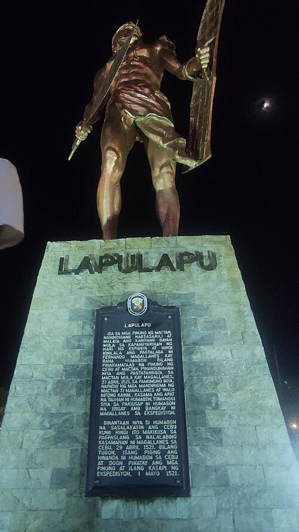
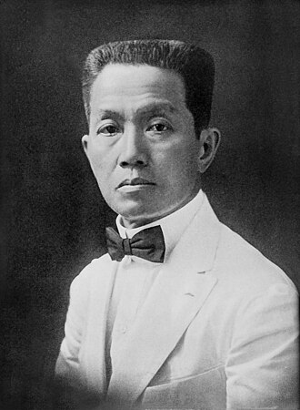
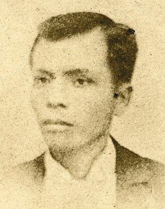
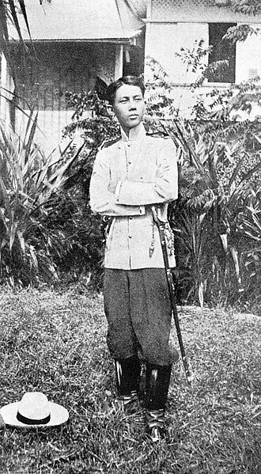
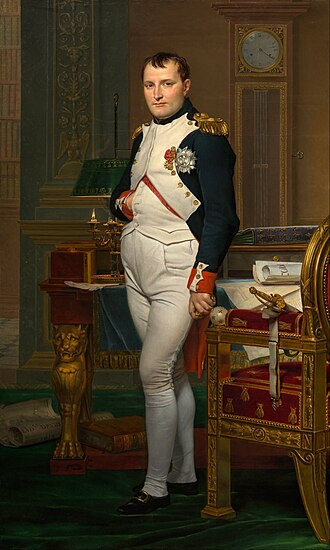
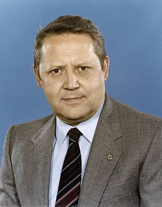
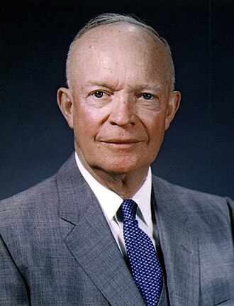
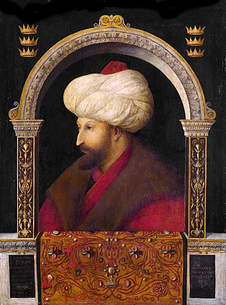

Lapulapu
JoyiCPH · CC BY-SA 4.0
Original image and full attributionOwn work
Modern commemorative depiction; no verified contemporary portrait survives.
Images are hosted locally. Display framing uses CSS. Paintings and statues are historical depictions, not photographs of the people themselves.

JoyiCPH · CC BY-SA 4.0
Original image and full attributionOwn work
Modern commemorative depiction; no verified contemporary portrait survives.

Harris & Ewing Photo Studio · Public domain
Original image and full attributionThis image is available from the United States Library of Congress's Prints and Photographs division under the digital ID hec.12736.This tag does not indicate the copyright status of the attached work. A normal copyright tag is still required. See Commons:Licensing.
Archival image or painted portrait; see file page for author and license.

Chofre y Cia (now Cacho Hermanos Inc.) · Public domain
Original image and full attributionhttp://kasaysayan-kkk.info/gallery.kkk.htm / http://malacanang.gov.ph/2942-imprinting-andres-bonifacio-the-iconization-from-portrait-to-peso/
Archival image or painted portrait; see file page for author and license.

Unknown photographer · Public domain
Original image and full attributionFilipinos at War
Archival image or painted portrait; see file page for author and license.
Airman Gerald B. Johnson · Public domain
Original image and full attributionThis tag does not indicate the copyright status of the attached work. A normal copyright tag is still required. See Commons:Licensing.
Archival image or painted portrait; see file page for author and license.

Jacques-Louis David · Public domain
Original image and full attributionzQEbF0AA9NhCXQ at Google Cultural Institute maximum zoom level
Archival image or painted portrait; see file page for author and license.
NASA/Paul E. Alers · Public domain
Original image and full attributionNASA, Congressional Gold Medal ceremony, 16 November 2011
Civilian portrait, selected to avoid occupational clothing or equipment as an answer cue.

UnknownUnknown · CC BY-SA 3.0 de
Original image and full attributionThis image was provided to Wikimedia Commons by the German Federal Archive (Deutsches Bundesarchiv) as part of a cooperation project. The German Federal Archive guarantees an authentic representation only using the originals (negative and/or positive), resp. the digitalization of the originals as provided by the Digital Image Archive.
Archival image or painted portrait; see file page for author and license.

White House · Public domain
Original image and full attributionEisenhower Presidential Library
Archival image or painted portrait; see file page for author and license.

Gentile Bellini · Public domain
Original image and full attributionThe Yorck Project (2002) 10.000 Meisterwerke der Malerei (DVD-ROM), distributed by DIRECTMEDIA Publishing GmbH. ISBN: 3936122202.
Archival image or painted portrait; see file page for author and license.
.jpg){kind=link}
.jpg){kind=link}
{kind=link}
{kind=link}
{kind=link}
{kind=link}
(3).jpg){kind=link}
{kind=link}